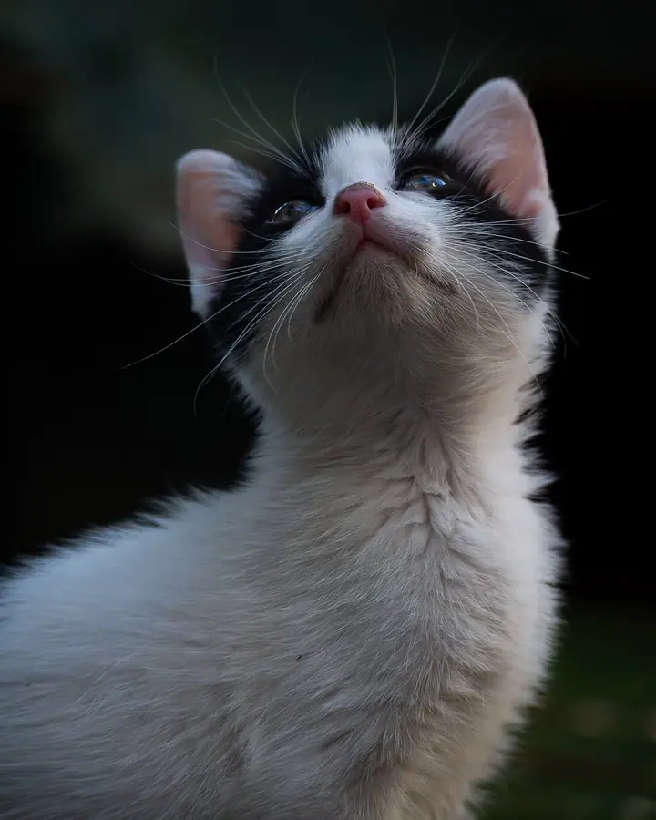
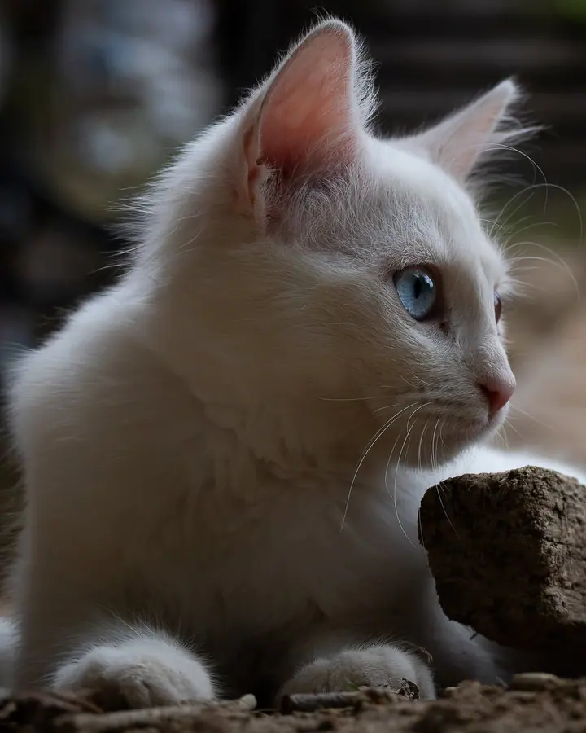

Focení vaší kočky u vás doma
Přijedu za vaší kočkou domů, do prostředí, které zná a kde se cítí jistě. Fotím ji v její nejpřirozenější podobě, barevně i černobíle.

Fotograf koček
Jmenuji se Tomáš Neumann a fotím kočky. Domácí mazlíčky svých klientů i toulavé krásky z ulice, barevně i černobíle. Pokaždé hledám to, čím je právě ta jedna kočka jiná než ostatní.
Zeptat se na termín
Přijedu za vaší kočkou domů, do prostředí, které zná a kde se cítí jistě. Fotím ji v její nejpřirozenější podobě, barevně i černobíle.
Z mé autorské tvorby si můžete vybrat obraz na zeď. Najdete mezi nimi domácí mazlíčky i toulavé krásky z ulice z různých koutů světa.
Originální fotografie koček i na stylovém merchi. Dárek pro každého, kdo kočky miluje stejně jako já.
Kočky mě provázejí už od dětství. Jejich přítomnost, osobitost i tajemství mě fascinují dodnes a právě díky nim jsem se vydal na cestu autorské fotografie, která mě zavedla do různých koutů světa.
Cestuji za nimi a objevuji jejich svět. Sleduji je v ulicích, v přírodě i v domovech svých klientů při zakázkovém focení. Ať fotím v barvách, nebo černobíle, jde mi vždycky o totéž: zachytit jejich přirozenost a jedinečný výraz.
Fotografie je pro mě způsob, jak propojit lásku ke zvířatům s kreativitou, cestováním a smyslem pro detail. Když zrovna nefotím, najdete mě nejspíš na cestách, za volantem nebo s hudbou v uších.
Ozvěte se přes formulář, e-mailem nebo telefonem a napište mi pár slov o své kočce.
Probereme, jaká vaše kočka je, co má ráda a kdy se k vám hodí přijet.
Přijedu do prostředí, které vaše kočka zná. Nechám ji být sama sebou a fotím ji tak, jak se přirozeně chová.
Vyberu a upravím ty nejlepší snímky, barevné i černobílé. Pokud budete chtít, můžeme z nich udělat i obraz na zeď.
Za vaší kočkou přijedu domů. Doma se cítí nejjistěji, a proto je na fotkách nejvíc sama sebou.
Každá kočka má svou povahu. Přizpůsobím se jí a nebudu ji do ničeho nutit, přirozené chování je přesně to, co chci zachytit.
Obojí. Některým kočkám sluší barvy, u jiných vynikne výraz a charakter víc v černobílé.
Ano. Z mé autorské tvorby si můžete vybrat obraz nebo stylový merch s originálními fotografiemi koček.